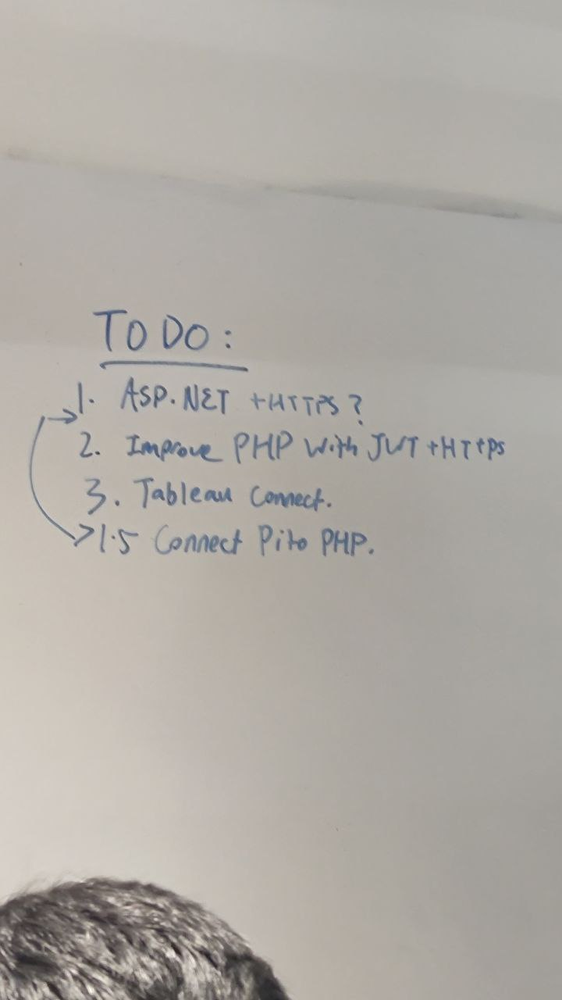

Welcome back to the Week 13 blog, where we are back to the classroom at last. We have a couple of things planned for this week, getting the Pi up and running again, and getting the ASP.NET application up, and connected to the MySQL database.
A couple of problem arised, everyone had some issues with connecting ADO.NET to the MySQL database, we decided to use MySQLConnector, and there are a few differences with connecting to MySQL than Microsoft SQL Server, mainly the connection must use a Username and Password, rather than Trusted_Connection in Microsoft SQL Server, which allows Authentication via Windows Authentication.
Some of my teammates takes ECAD (E-commerce App Development), which they use XAMPP, PHP, MySQL and Apache already. So this causes a conflict in multiple MySQL instances, and some having password protection, causes some error when running the app. We managed to diagnose and fix the issue, pointing to the right port, (instance of MySQL).
Next issue is that, I forgot to bring a few jumper wires along with me to the lesson,
and managed to borrow some from the next table, and I set up the Pi, and hooked up both the
HuskeyLens and the board. I did some sudo apt update && sudo apt upgrade, and running my application
it throwed up Error E2, E3 from the RFID reader. I tried a lot of troubleshooting steps, such as reseating all
wires and using a few debugging scripts to no avail. Unfortunately, a few days later, a friend from the other table
encountered a similar issue with their sensor, while using the same wire, therefore we can determine that
the wire has gone bad (not making a good connection).
Even though it is WhiteSpace week (next week), we will all spend our time on our various aspect of the project, and meet up one day to synchronise on what has been done. See you next week.
